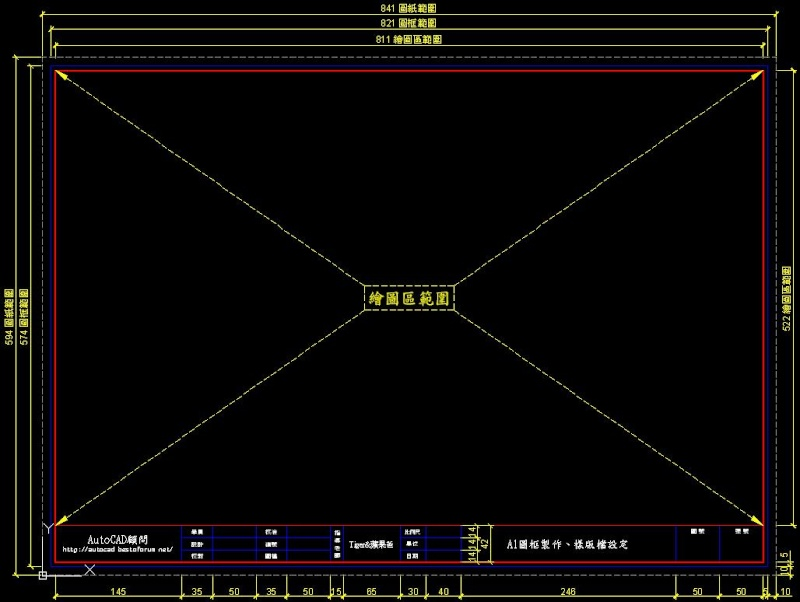
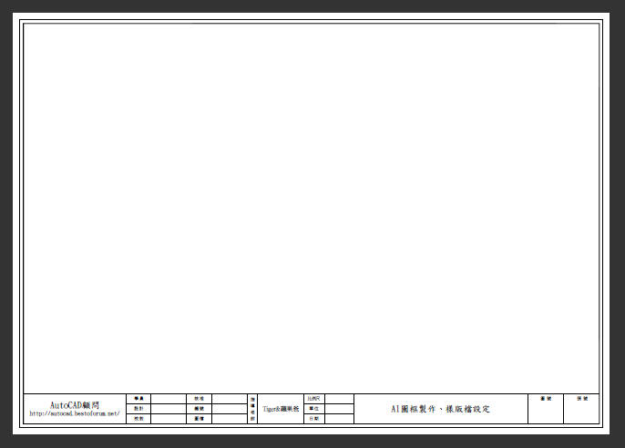
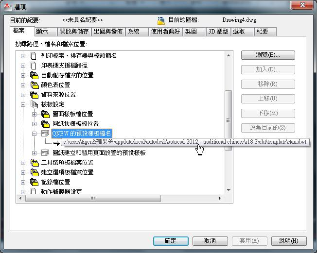
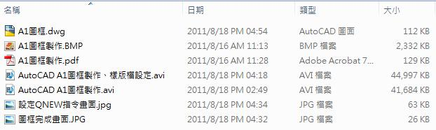

教學範例目標：
步驟一 >> 可讓使用者學會製作繪製工程中必要的圖框。
步驟二 >> 只要用QNEW指令打開新圖，就會擁有已插入好「外部參考圖框」標準樣版檔。
注意：操作步驟時有任何疑問請隨時提出。

https://app.box.com/s/unswegg4oh7z0dio4oq6cryzw2uaq1y1
這個是備份的連結，上面可下載就好： https://drive.google.com/file/d/0B41hPtWnOM8QRmhwX2otWk8tMjg/view?usp=sharing&resourcekey=0-3OPEUPM2RUSc8n9Gab7MCA
▲步驟一.範例設計使用A1圖框(圖紙大小=841mm X 594mm)，大家可以依照您的公司標準製作圖框(如A3圖紙或A4圖紙)。
圖框完成畫面：

圖框範例影片操作：
▲步驟二.新建「樣版檔」(DWT)，再插入「外部參考」XREF方式連結A1圖框，參考路徑使用「相對路徑」，最後透過「選項」設定 QNEW指令。
設定QNEW指令畫面：

樣版檔設定範例影片操作：
1.PO上範例完成圖片(圖框完成畫面及設定QNEW指令畫面)
2.範例中所學到的指令(如您未使用過的)
3.使用的AutoCAD版本
4.範例所需時間
5.您的意見補充

專屬資源下載:
https://www.autocad-tw.com/f35-forum
1.延伸範例主題： [觀念]規劃圖面單位及圖面比例
2.延伸範例主題： [測驗題]標準作業：A1圖框製作、樣版檔設定(一)
3.延伸範例主題： [測驗題]標準作業：A1圖框樣版檔規劃(二)
4.延伸範例主題： [測驗題]標準作業：A1圖框二種標註比例圖面(三)
5.延伸範例主題： [進階]AutoCAD巨集－建立視埠+設定比例+鎖護視埠
6.延伸範例主題： [進階]工具選項板+標準A1屬性圖框設置
7.延伸範例主題： [私房教學1-5]AutoCAD配置空間分圖作業